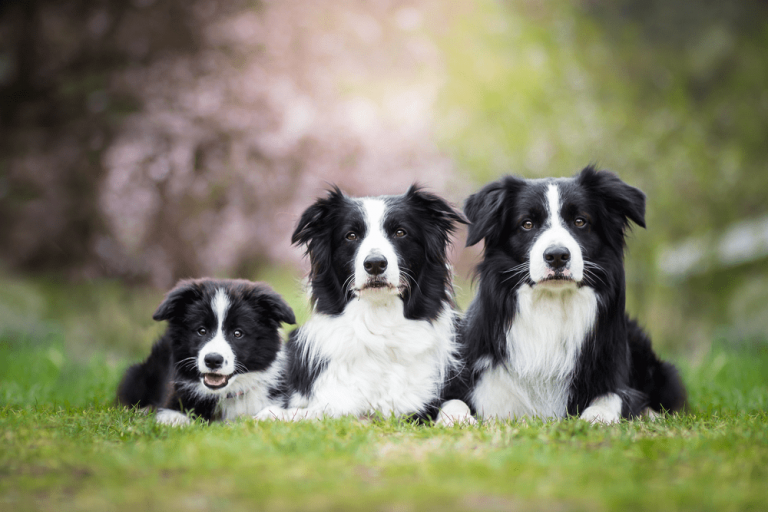

Chó Border collie.

Nguồn gốc chó Border collie:
Chó Border Collie, còn gọi là “Collie biên giới” có nguồn gốc từ vùng Northumberland, thuộc biên giới giữa Anh và Scotland. Là giống chó chăn gia súc nổi tiếng với nhiều ưu điểm vượt trội, Border Collie đứng số 1 trong Top những loài chó thông minh nhất.
Ban đầu, Border Collie được chuyên dùng để chăn cừu trên các thảo nguyên rộng lớn. Hiện nay, loài chó này ngày càng phổ biến và được nuôi làm thú cưng tại nhiều gia đình trên thế giới, trong đó có Việt Nam.

Border Collie chính thức được công nhận bởi hiệp hội chó Hoa Kỳ vào năm 1995.
Đặc điểm:
- Thân hình:
Border Collie là một giống chó lao động kích thước cỡ trung bình tràn đầy năng lượng. Giống chó Border Collie có thân hình vừa phải mình dài hơn so với chiều cao của đôi chân (Cơ thể hơi dài hơn chiều cao). Kích thuớc chiều cao của nó từ 46-56 c có trọng lượng từ 12–20 kg. Tầm vóc con đực đến 54 cm, con cái nhỏ hơn một ít. Trọng lượng con đực khoảng 24 kg, con cái nhẹ hơn. Chó thuần chủng thường có chiều cao từ 46–56 cm, trung bình là 54 cm với giống đực và 52 cm với giống cái, cân nặng phổ biến từ 15–35 kg. Tương quan giữa chiều cao và cân nặng cho thấy đây là giống chó có thân hình rất nhẹ nhàng, thanh thoát và rất nhanh nhẹn.

- Phần đầu:
Đầu collie nhỏ, mõm dài, tai lớn, mặt trông rất tinh khôn. Đôi tai rộng cân đối với đầu và hơi cụp, nhưng đa số cụp hẳn. Hộp sọ tương đối bằng phẳng rộng vừa phải. Hộp sọ và mõm có chiều dài tương tự nhau. Hàm răng chắc khỏe đan xen nhau hình kéo cắt. Chiếc mõm của nó khá dài. Đôi tai có kích thước trung bình được thiết lập cách xa nhau có thể dựng thẳng đứng hoặc bất cứ hình dạng gì. Tai chó Collie cũng không có một chuẩn nhất định, có những chú chó Collie có tai rất lớn, nhưng cũng có con tai ngắn. Tương tự, tai của mỗi chú chó cũng có thể cụp hoặc dựng, hoặc cả cụp và dựng tất cả đều được công nhận là Border Collie thuần chủng.

- Màu lông:
Collie rất nổi bật với bộ lông rất dài và dày, màu lông rất đa dạng, có thể có màu đen-trắng, ba màu, trắng-xanh, trắng-đỏ, một số chú chó Collie có thể có lông màu đơn sắc nhưng rất hiếm. Bộ lông có 2 lớp dày với khả năng chịu thời tiết tốt. Border Collie có 2 kiểu lông: Loại lông ngắn (khoảng 2,5 cm) và loại lông dài (khoảng 7,6 cm). Border Collie có nhiều màu lông. Lông của Border Collie dài và nhiều nhất ở bờm cổ và đuôi. Lông ngắn, mượt trên mặt, tai và chân. Border Collie sở hữu bộ lông với 2 lớp dài, dày và mượt, lông từ cổ xuống ngực và ở bụng dài hơn những phần khác trên cơ thể nhìn như bờm sư tử. Lông của Collie có rất nhiều màu: đen trắng, đỏ trắng, có lúc lên tới 3 màu đan xem nhau.

Lý do nên nuôi Border Collie:
- Phẩm chất ưu tú:
Border Collie đứng đầu trong danh sách những giống chó thông minh nhất thế giới. Chúng rất sáng dạ, ham học hỏi và có khả năng tiếp thu mệnh lệnh một cách nhanh chóng, chính xác. Vì vậy nên việc huấn luyện Border Collie dễ dàng hơn rất nhiều so với những loài chó khác.

- Sắc bén, Tinh anh:
Border Collie sở hữu một khuôn mặt tinh anh, cặp mắt sắc bén với ánh nhìn mãnh liệt, có khả năng điều khiển được cả đàn cừu. Border Collie còn có một điểm đặc trưng là chân có huyền đề. Tại Việt Nam, những giống chó có huyền đề ở chân được thường được đánh giá cao, chúng khôn ngoan và rất dễ dạy bảo.
- Luôn tràn đầy năng lượng :
Là giống chó lao động nên Border Collie có nhu cầu vận động cao và làm việc rất chăm chỉ. Khi nuôi chúng tinh thần thể thao của bạn chắc chắn sẽ nâng lên rất nhiều.

- Hoạt bát,Nhanh nhẹn:
Điểm nổi bật nhất của Border Collie chính là sự hoạt bát, nhanh nhẹn. Chúng có khả năng di chuyển khi cúi thấp một cách linh hoạt và rất điêu luyện trong những trò chơi như ném đĩa, bắt bóng… Chính bởi vậy Border Collie thường được huấn luyện để biểu diễn xiếc, với những động tác yêu cầu độ khó cao.
- Ngoan ngoãn,Tình cảm:
Border Collie là loài chó rất ngoan và biết vâng lời. Theo bản năng, chúng làm việc và thực hiện nhiệm vụ khi có mệnh lệnh từ chủ. Chúng luôn sống hòa đồng với mọi người và đặc biệt dịu dàng với trẻ nhỏ.

 Bài viết gần đây
Bài viết gần đây

August 31, 2019

August 31, 2019

August 31, 2019
August 31, 2019

August 31, 2019